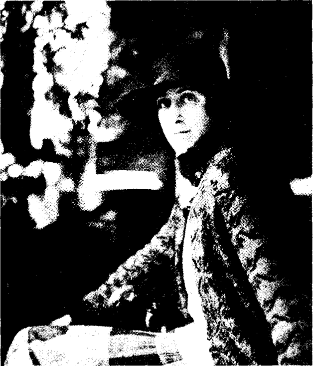

Bölüm 3
Virginia Woolf un Cinsel Sorunları
Virginia Woolf’un tam bir özveriyle kendisini ona adamış eşi Leonard Woolf’a da, tüm erkeklere de gösterdiği soğukluk, çocukluğunda geçirdiği bir travmadan kaynaklanıyordu belki de: Virginia altı ya da yedi yaşlarındayken, yetişkin bir delikanlı olan anne bir kardeşi George Duckworth, küçük kızı biraz yüksekçe bir yere koyar, mahrem yerlerini incelermiş. Virginia Woolf, 12 Ocak 1941’de, yani kendini öldürmeden iki ay önce, elli dokuz yaşındayken yazdığı bir mektupta, bunu anımsadıkça “Hâlâ utançla ürperiyorum” (“ I still shiver with shame’) der. Tamamiyle güvenilir bir kaynak olan yeğeni Quentin Bell’e göre, bütün çocuklar bilirmiş George ağabeylerinin Virginia’ya musallat olduğunu. Ama bu tür davranışların -örneğin, Virginia yatarken onun yatağına zıplayıp ona sarılmaların, onu koklayıp öpmelerin, okşamaların- kardeşçe bir sevecenlik mi, yoksa cinsel davranışlar mı olduğunu kestiremezler; bu yüzden de George’u büyüklere şikâyet edemezlermiş. Virginia büyüyünce, George Duckworth ona sarkıntılık etınekten vazgeçmiş, kız kardeşine çok düşkün ağabey rolünü benimsemiş. Virginia, ancak 1904’te, yani yirmi iki yaşındayken, George’un evlenip başka bir eve taşınmasıyla kurtulmuş bu adamdan. Ama bu arada olanlar olmuş; Virginia on üç yaşında, buluğ çağında, ilk büyük depresyonunu geçirmiş ve onun gözünde, kadınla erkek arasındaki cinsel ilişki, iğrenç saldırılar ve ensestle özdeşleşmiş.
Ne var ki, Vanessa’nın oğlu Quentin Bell’e bakılacak olursa, George, yalnız teyzesi Virginia’ya değil, annesi Vanessa’ya da musallatmış, ona da aynı şeyleri yaparmış. Oysa Vanessa’da, erkeklere karşı tiksintinin ya da lezbiyen eğilimlerin en küçük bir izi yoktur. Tam tersine, bu çok beğenilen ressam, çocuklar doğuran, âşıkları olan, Birinci Dünya Savaşı’nda ölen yakışıklı şair Rupert Brooke ile gece yarıları ırmaklarda çıplak yüzen, kocasından boşanıp sevdiği erkekle evlenen, sözün kısası cinselliğini doyasıya yaşayan bir kadındı. Virginia, kendisinden üç yaş büyük ablasına hem çok bağlıydı, hem de çok kıskanırdı onu. Quentin Bell’in anlattığına göre, annesiyle babası evlenince, Virginia, kendisine en yakın insan bildiği ablasının ona hainlik ettiği, onu terk ettiği kuruntusuna kapılmış. Vanessa’nın mutluluğunu bozarak ondan hıncını almak için, fazla ileri gitmeden, eniştesi Clive Bell ile flört etmişti bir süre. Ne var ki, Virginia, zamanla Vanessa’yı kıskanmaktan vazgeçti, ona hayranlık duymaya başladı. Güncesinden anlaşıldığı gibi, kardeşini ahlak açısından kendisinden çok daha üstün buldu. Dünyaya karşı verdikleri savaşlarda, Vanessa’nın kendisi kadar çaba harcamadan, her zaman zaferler elde ettiğini söyledi. Vanessa’nın, cesareti, anlayışı ve merhameti bir yana; kendisine kıyasla bir üstünlüğü daha vardı: “Çocukları onun yanındaydı” (“with her children round her”).
Eşiyle cinsel ilişkisi pek uzun sürmediği halde, Virginia Woolf da çocuk doğurabilirdi elbette; hattâ salt bu amaçla cinsel ilişkide bulunabilirdi. Ama Leonard Woolf, analık sorumluluğunun eşini ruhsal açıdan büsbütün sarsacağı korkusuyla çocuk istemiyordu. Gelgelelim, çocuksuzluk, öteki sorunlarına eklenip, başlı başına bir dert oldu Virginia Woolf için. 1911’de, daha evlenmeden önce, Vanessa’ya bir mektubunda, “to be twenty nine and unmarried -to be a failure - childless - insane too - no writer” (Yirmi dokuz yaşında ve evlenmemiş olmak - başarısız olmak - çocuksuz- üstelik deli - bir yazar da değil) diyerek yakınır. Evlendikten on bir yıl sonra da güncesinde, çocuksuzluk konusunda bir kadının kendini aldatmaması gerektiğini söyler:
“Never pretend that the things you haven’t got are not worth having... Never pretend for instance, that children can be replaced by other things.”
(Sahip olmadığın şeyler değersizdir nasılsa gibi haller takınma asla... Örneğin, çocukların yerini başka şeyler alabilirmiş gibi haller takınma asla)
Çocuksuzluğu, iyi yazamamakla özdeşleştirdiğini gösteren bir tümce de vardır güncesinde:
“I want to appear a success... Yet I don’t get to the bottom of it. It’s having no children... Failing to write well.”
(Başarılı görünmek istiyorum... Ama işin köküne inemiyorum... Çocuğum olmadığı için... İyi yazmayı beceremediğim için.)
23 Haziran 1929 tarihli güncesinde, yani kırk yedi yaşındayken, yaşamında her şeyin ona boş ve umutsuz göründüğü bir anda, eskiden çocuk doğursaydı bile, bunun bir işe yaramayacağını söyler.
Ne var ki, Virginia Woolf, çocuk doğurup doğurmamak konusunda çelişkiler içindedir. Aralık 1927 güncesinde, çok sevdiği yeğenlerinin verdiği bir partiden dönüp de bu çocukların ne hoş olduklarını anlattıktan sonra, hem kendini tümüyle yazmaya adamak istediği, hem de çocuk doğurmanın “Nedenselliğini” (“physicality”) sevmediğinden, doğurmaktan vazgeçtiğini söyler:
“Yet oddly enough, I scarcely want childeren of my own now. The insatiable desire to write something before I die, the ravaging sense of the shortness and feverishness of life... I don’t like the physicalness of having children of my own... Perhaps I have killed the feeling instinctively; or perhaps nature does.”
(Ama ne garip ki, kendi çocuklarımın olmasını istemiyorum artık. Ölmeden önce bir şey yazmaya doymak bilmeyen bir isteğim var... Yaşamın kısalığı ve sağlıksız ateşi beni yıkmakta... Doğurmanın bedenselliğinden hoşlanmıyorum. Bu duyguyu içgüdüsel olarak öldürdüm belki; belki de doğa yaptı bunu.)
Kadınla erkeğin cinsel ilişkisini itici bulan Virginia Woolf’un bu ilişkinin doğal sonucu olan çocuk doğurmayı da itici bulması kaçınılmazdı elbette. Çocuğu olmasını bir ara kafasıyla istedi; ama bedeni buna katlanamadı. Annesiyle babası, “virgin” (bâkire) sözcüğünden türeyen Virginia adını ona vermekle, kızlarının geleceğini önceden görmüşlerdi sanki. Virginia Woolf, baş kişilerinden Mrs. Dalloway’in, çocuk doğurduktan sonra da bâkireliğini koruduğunu söyler. Onun durumu da Mrs. Dalloway’inki gibi olacaktı; çocuk doğursa bile gene bâkire kalacaktı.
Virginia Woolf, romanlarında cinselliği ve cinsellikten kaynaklanan duyguları, hiç ele almaz, almak istemez de. Lytton Strachey’ye 1927’de yazdığı bir mektupta, “love is such a horror” der. Aşkı nitelemek için kullandığı “horror” sözcüğü, korku, tiksinti, dehşet ve çirkinlik anlamlarını kapsar. Çok daha önceleri, 1918’de yazdığı başka bir mektupta, “the vague and dreamlike world, without love, or heart, or passion, or sex, is the world I really care about and find interesting” (benim hoşlandığım ve ilginç bulduğum dünya, içinde aşk, ya da kalb, ya da tutku, ya da cinsellik bulunmayan, düşlere benzeyen, belli belirsiz bir dünyadır) der. Cinsel bir konuyu çok ender olarak ele alınca da, cinselliğin ancak çirkin yanlarına değinir. Örneğin, The Years’te (Yıllar) bir sokak fenerinin altında duran bir sapığın, küçük Rose’a cinsel uzvunu göstermesi; ya da yaşlanmaya yüz tutmuş Albay Pargiter’in, çok bayağı bir kadın olan, salt parası için onunla yatan metresi Mira ile sevişmesi gibi. Virginia Woolf’un cinselliği ele almayan romanlarında, doğal olarak aşk tutkusu da yoktur. Sevgi vardır, ama içine cinselliğin de karıştığı coşkulu bir aşk yoktur; tıpkı başka bir bakirenin, Jane Austen’in romanlarında olmadığı gibi. Ancak Orlando’da vardır aşk tutkusu, hem de çok yoğun olarak. Ama unutmamalı ki Orlando, yazarın lezbiyen eğilimlerini yansıtan yarı erkek yarı kadın bir yaratık, bir androjindir. Yazarın cinselliğini yansıtan başka bir olgu da, birçok romanında, The Waves’deki Neville, Jacob’s Room’daki (Jacob’un Odası) Bonamy, The Years’teki Nicholas ve Between tlıe Acts’teki (Perde Araları) William Dodge gibi eşcinsel erkeklerin bulunmasıdır.

Vita Sackville-West, 1924.
Virginia Woolf’un cinsel seçimi kadınlardan yanaydı. Yalnız cinsel açıdan değil, hiçbir bakımdan erkeklerden hoşlanmazdı. Yeğeni Quentin Bell’e göre, teyzesi, bunu bile bile yapmasalar bile, erkeklerin kadınları hor gördüklerini, onlara güvenmediklerini sanırdı. Erkekleri genellikle akılsız da bulurdu. “And how they pride themselves upon a point of view which much resembles stupidity” (Ahmaklığa çok benzeyen görüş açılarından ötürü nasıl da gururlanırlar) derdi. Güncesinde, kadınların ancak başka kadınlarla güzel ilişkiler kurabileceğini söyler:
“To be friendly with women, what a pleasure - the relationship so secret and private compared with relations with men.
Why not write about it? Truthfully?”
(Erkeklerle ilişkilerle karşılaştırılınca, kadınlarla dostluk öyle bir haz ki- öyle mahrem, öyle gizli bir ilişki ki! Neden yazılmasın bu? Doğrusunu söyleyerek?)
Lezbiyenlik, özellikle o yıllarda, tabu olduğundan, Virginia Woolf doğrusunu söyleyemiyor, duygularını açıkça dile getiremiyordu. Ama bu konuya hiç değinmeden de yapamıyordu. İleride göreceğimiz gibi, Mrs Dalloway’deki baş kişisi, gençliğinde Sally Seton’a âşık olur ve iki kız dudak dudağa öpüşürler. “Moments of Being” (Var Olma Anları) adlı öyküsünde, Fanny Wilmott’un piyano öğretmeni Julia Cray’in lezbiyen eğilimleri besbellidir. Öğrencisine öyle bir hayranlıkla bakar ki, genç kızın yüzü kıpkırmızı kesilir. Fanny Wimotta’a, salt bir erkeğin onu koruması için evlenmesi öğüdünü verirken, garip bir hırçınlıkla, zaten, erkeklerin “başka bir işe yaramadığını” (“ it was tlıe only use of men”) söyler. Fanny günün birinde “var olduğu bir an” yaşar Julia Cray ile: “Julia blazed, Julia kindled. Out of the night she burnt like a dead white star. Julia opened her arms. Julia kissed her on the lips.” (Julia alev aldı, Julia tutuştu. Gecenin içinde, ölü beyaz bir yıldız gibi yandı. Julia kollarını açtı. Julia onu dudaklarından öptü.) “Kew Gardens” (Kew Bahçeleri) öyküsünde, Eleanor, kocası ve çocuklarıyla bu güzel bahçelerde gezinirken, kocası ilk sevdiği kızı düşünürken, Eleanor da yirmi yıl önceyi düşünür: Bu bahçelerde resim yaparken, kır saçlı yaşlı bir kadın, ansızın arkasından gelip onu ensesinden öpmüştür. Elanor, “it was so precious... The mother of all my kisses all my life” (Öyle kıymetliydi ki bu... Bütün öpüşlerimin anasıydı ömrüm boyunca) der kendi kendine. Virginia Woolf, güncesinde, yazmayı tasarladığı başka bir öyküden söz ederken, “sapphism will be suggested” (lezbiyenlik akla getirilecek) der. Ama o öyküyü yazmaz.
Virginia Woolf ilk gençliğinde, belki de Mrs. Dalloway’deki Sally Seton’un modeli olan Madge Vaughan’a âşık olmuştu. 1914’teki bunalımı sırasında, kendisine büyük bir özveriyle bakan Violet Dickinson’a da âşık oldu. Ama asıl büyük aşkı, 1922’de yani kırk yaşındayken tanıştığı Vita Sackville-West’di (1929-1962). Asıl adı Victoria olan, ama Vita denilen bu kadın, İngiltere’nin en soylu ailelerinden birinden geliyordu. Lord Sackville’in kızıydı ve XVI. yüzyıldan beri ailenin malı olan ülkenin en büyük şatolarından birinde, Knole’da doğmuştu. Eşi Harold Nicolson, hem yazar, hem de diplomattı. Tahran’da ve 1920’li yıllarda İstanbul’daki İngiliz Elçiliğinde görevli olmuştu. Virginia Woolftan on yaş küçük olan Vita Sackville-West, şiirler, Passenger to Teheran (Tahran’a Yolcu) ve Twelve Days (On İki Gün) gibi seyahatnameler; Jeanne D’Arc’ın ve Ermiş Teresa’nın yaşam öyküleri; All Passion Spent (Bütün Tutkular Tükendiğinde), Pepita, Seducers in Ecuador (Ekvator’da Baştan Çıkaranlar), The Edwardians (Kral Edward’ın Çağdaşları) gibi romanlar yazmıştı. Esmerliğini İspanyol annesinden alan, çok çarpıcı ve çekici bir kadındı. Biseksüel olduğundan, hem erkeklerle, hem de kadınlarla ateşli aşk serüvenleri yaşadı. Eşi Harold Nicholson da eşcinsel olduğu için, birbirilerine karşı hoşgörülü davranmışlar; iki oğulları dünyaya geldikten sonra, evlilikleri güzel bir dostluğa dönüşmüştü.
1922 tarihli güncesinden anlaşıldığı gibi, Virginia Woolf hemen kapılmadı Vita Sackville-West’e. Hattâ onu pek beğenmedi ilkin. Onu “bıyıklı ve bir papağan kadar renkli” (“moustached, parake-et coloured) buldu. Aristokratlığından yararlanıp, aklına eseni yaptığını; son hızla büyük otomobiller sürdüğünü; ama sanatçılara özgü ince zekâdan yoksun olduğunu söyledi. Vita’nın erkeksi yanı üstünde özellikle durarak, “she is a grenadier; hard, handsome, manly” (el bombaları atan bir askerdir o; katı, yakışıklı, erkeğimsi) dedi. Bu kadının “sapphist’’ yani lezbiyen olduğunu da belirtti. İki yıl sonra, Temmuz 1924 güncesinden anlaşıldığı gibi, Vita’nın aklına hayranlık duymamakla birlikte, onun bedensel güzelliğinden etkilenmeye başladı:
“All these ancestors, and centuries, and silver and gold have bred a perfect body. She is stag like, or race horse like... As a body hers is perfection.”
(Bütün bu atalar ve yüzyıllar, bu gümüşlerle altınlar, kusursuz bir beden yetiştirmiş. O bir geyiğe benziyor ya da bir yarış atına... Beden olarak, onunki kusursuz.)
Tutkuları pek sürekli değil ama çok şiddetli olan Vita Sackville- West ise, Virginia Woolf’a fena halde âşık olmuştu. Anlayışlı eşi Harold Nicolson’a “I love Mrs. Woolf with a sick passion” (Mrs. Woolf’u sağlıksız bir tutkuyla seviyorum) diye mektuplar yazıyordu. Virginia Woolf’un cinsel eğilimleri göz önünde tutulursa, böyle bir tutkuya karşı koyamayıp bir süre sonra teslim olması doğaldı. Ne var ki, Vita’ya göre, teslim olmuş sayılmazdı aslında. Vita bir mektubunda, Virginia’nın bedeni ve duygularıyla değil, ancak beyniyle sevmesinden yakınır. “Yes, you like people through the brain rather than through the heart” (Evet, yüreğinden çok beyninle hoşlanıyorsun insanlardan) diye çatar ona. Quentin Bell’e göre, teyzesi, Vita’nın istediği kadar ileri gitmiyordu bu ilişkide. Biraz öpüşüp koklaşıyorlar, ama ilişkileri platonik kalıyordu aslında. Virginia’nın cinsel soğukluğu, bu lezbiyen aşkını bile frenliyordu anlaşılan. Güncesinde, Vita’nın ona âşık olduğunu yazdıktan sonra, “Am I in love with her? But what is love?” (Ona âşık mıyım? Ama aşk nedir?) diye soruyordu kendi kendine. Virginia Woolf ile Vita Sackville-West’in birbirilerine yazdıkları mektuplar çoktan yayınlandığı; Vita’nın oğlu Nigel Nicolson 1973’te, Vita’nın güncesinden yararlanarak, annesiyle babasının ilişkisini, annesinin başka erkeklerle ve kadınlarla -bu arada Virginia Woolf ile- ilişkisini ayrıntılı olarak açıkladığı için, bilmediğimiz pek bir şey kalmadı bu konuda. Bunları bilmesek de olurdu diyebiliriz. Ama birçoklarının yadırgayacağı ve pek uzun sürmeyip zamanla dostluğa dönüşen bu garip aşk öyküsünün Orlando gibi bir başyapıtın yazılmasına neden olduğunu da unutmamalıyız.